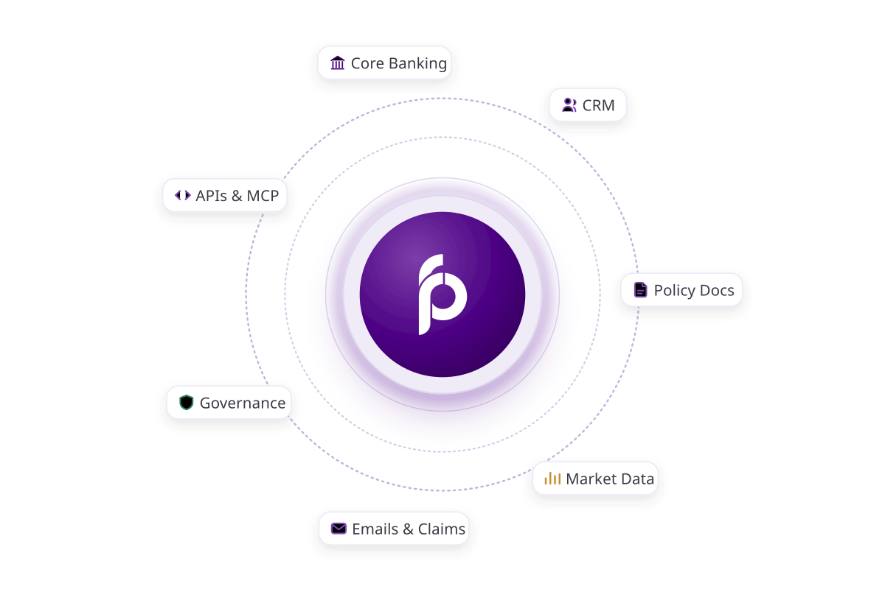
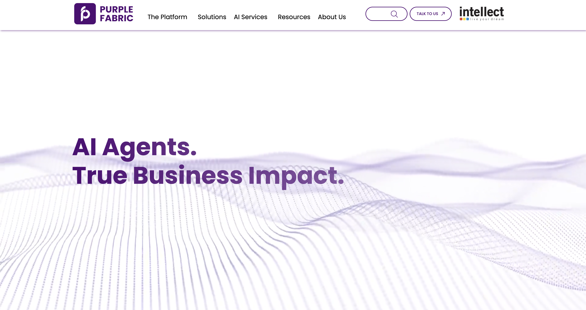
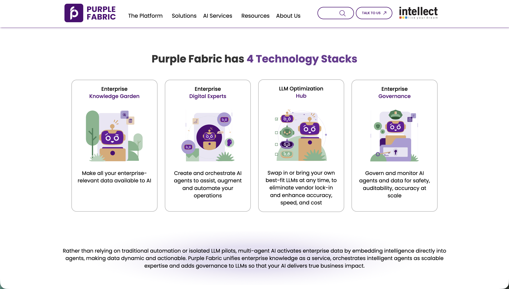
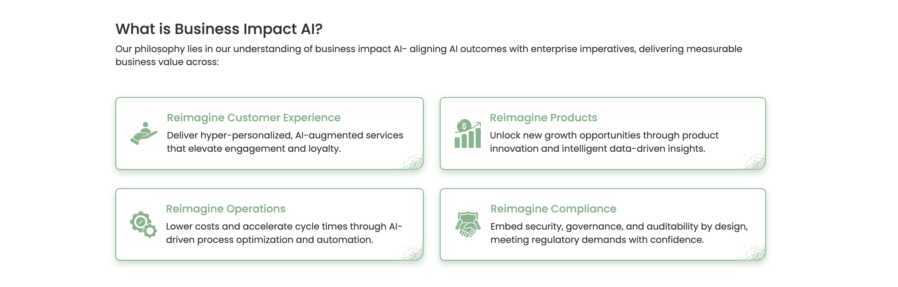
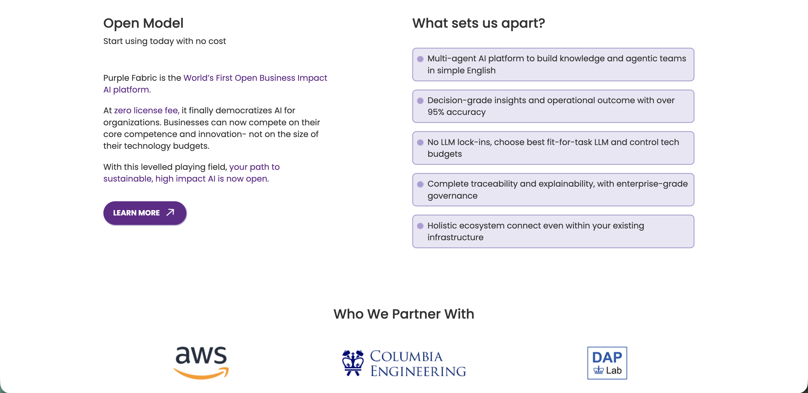
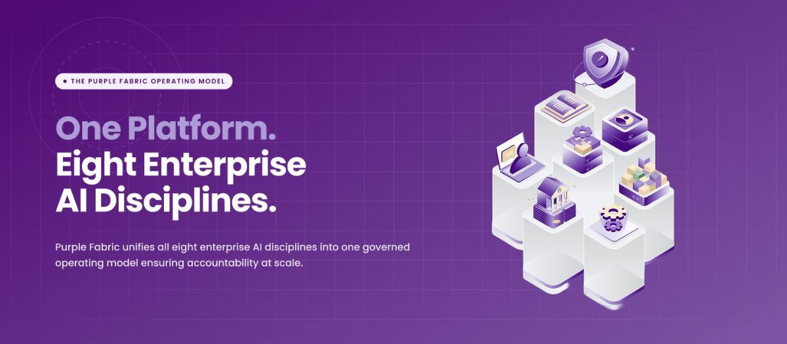
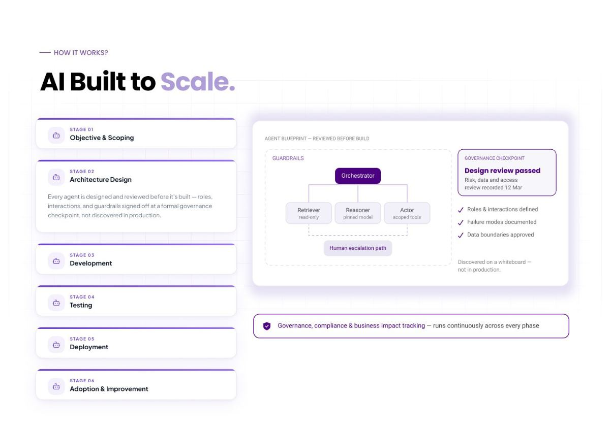

Contents
Rebuilding an enterprise AI homepage around the buyer's questions
{{ m.k }}
{{ m.v }}
Overview
Purple Fabric is Intellect's enterprise AI platform for financial institutions.
The homepage led with internal terminology and platform architecture before explaining what the product actually did. I restructured the experience around a buyer's decision journey, then redesigned the homepage to make its value, capabilities and credibility easier to understand.
Agents
Library
Policies
Runs
Data
AgentsTeamsWorkflows
Build
Credit memo drafter
Drafts memos from filings and internal notes.
LiveKYC reviewer
Checks identity documents against sanctions lists.
In reviewClaims triage
Routes incoming claims by severity and policy.
LivePortfolio summary
Summarises holdings and exposure for review calls.
DraftPolicy checker
Flags answers that fall outside approved policy.
LiveTrade reconciler
Matches trade breaks across settlement systems.
In reviewThe problem
I had days to understand the product. A first-time visitor gets seconds.
When I joined the project, even after completing product training, I struggled to understand Purple Fabric from the homepage alone.




Hero
Technology stacks
Business Impact AI
Open model
Four screens deep before a first-time visitor reaches a reason to care.
{{ p.n }}
{{ p.t }}
What was getting in the way
{{ j }}
The homepage asked visitors to learn Purple Fabric's language before showing them why Purple Fabric mattered.
Competitive research
Everyone else led with outcomes. We led with vocabulary.
PURPLE
FABRIC → Enterprise OS · Knowledge Garden · Digital Experts
FABRIC → Enterprise OS · Knowledge Garden · Digital Experts
What I took forward
{{ f.t }}
The reframe
How might we explain Purple Fabric without requiring visitors to understand Purple Fabric first?
I stopped organising the homepage around the platform's architecture and started organising it around the buyer's questions.
Before
Organised by the platform
{{ b }}
After
Organised by the buyer
{{ a }}
Same product. Different order of understanding.
Designing the new experience
01 / MAKE RELEVANCE IMMEDIATE
Enterprise AI for financial institutions.
The new hero identifies the audience before introducing the platform.

Audience named in the first five words.
Business outcomes and customer proof moved above the platform architecture.
02 / EIGHT DISCIPLINES, ONE PLATFORM
Keep the weave in the visual language, not the information architecture.

03 / MAKE COMPLEXITY EXPLORABLE

Progressive disclosure lets visitors understand the system first and explore individual capabilities second.
04 / MAKE TRUST VISIBLE

Governance became part of the product story rather than supporting copy.
05 / MEET BUYERS WHERE THEY ARE

Solutions provide an entry point through familiar financial functions rather than AI architecture.
Final design
Eight disciplines, one governed fabric
Scrolling through the rebuilt homepage: how each section hands off to the next, and how the platform reveals its depth on demand rather than all at once.
01 · The scroll
From the hero through the impact numbers, the operating model, and into the eight disciplines.
02 · Progressive disclosure
Opening a discipline card, and the lifecycle and governance sections that follow it.
Outcome
From architecture-first to buyer-first.
Before
Learn our terminology → understand our architecture → find the value
After
Recognise your problem → see the value → understand the platform → build trust
Delivered
- •New information architecture
- •Homepage redesign
- •Messaging framework
- •Interactive platform storytelling
Reflection
This project shaped how I think about explaining a complex product:
{{ r.t }}
{{ r.b }}
Thanks for stopping by.
Always happy to talk design, research, or a new idea.
Made with ♥ by Laila · 2026
↑ Back to top